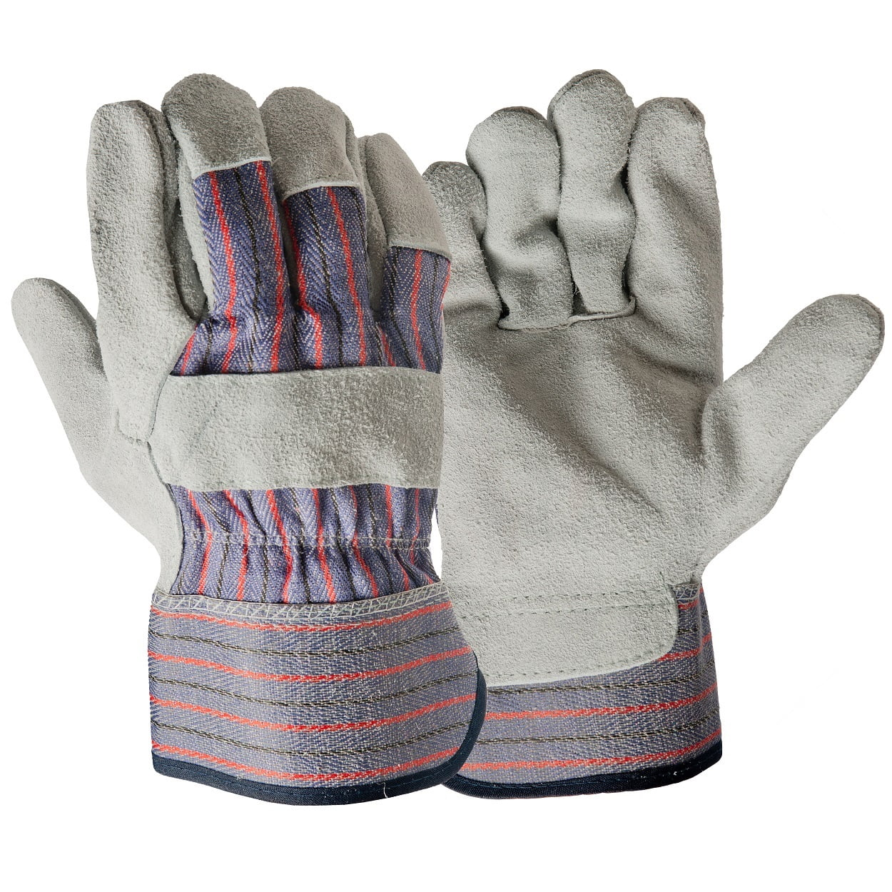

Setembro 2025

Queridos amigos,
Este mês, nosso foco inclui frutas e vegetais enlatados e engarrafados – 60 libras por pessoa para dois meses; água – um galão por dia; e ferramentas e itens pessoais.
“O barco a vapor Bertrand afundou no rio Missouri em 1865. Foi encontrado um século depois, em 1968, sob 30 pés de sedimentos perto de Omaha, Nebraska. Entre seus suprimentos estavam alimentos enlatados incluindo pêssegos em brandy, ostras, tomates, mel e vegetais mistos. Em 1974, a Associação Nacional de Processadores de Alimentos (NFPA) analisou os alimentos enlatados quanto à contaminação bacteriana e valor nutricional. Embora os alimentos tivessem perdido cheiro e aparência frescos, os químicos da NFPA não detectaram crescimento microbiano e determinaram que os alimentos eram tão seguros para consumo quanto quando enlatados mais de 100 anos antes.” – Atkins, 2010
Armazenamento de Frutas e Vegetais Enlatados e Engarrafados
Não recomendamos armazenamento por cem anos, mas a história acima demonstra que existe alguma durabilidade em nossos alimentos enlatados e engarrafados – com uma meta de dois meses. Para calcular a quantidade por pessoa, as latas pesam cerca de um quilo e os frascos de um litro cerca de dois quilos. Portanto, para uma família de quatro pessoas, 60 libras por pessoa podem incluir 7 caixas (24 latas) de vegetais variados e 72 frascos de frutas.

Alimentos enlatados com alto teor de ácido, como tomates, frutas e vegetais em conserva, normalmente têm validade de 12-18 meses. Alimentos com baixo teor de ácido, como carnes, peixes, aves e a maioria dos vegetais, podem durar de 2 a 5 anos ou mais, se armazenados corretamente. Sempre rotule todos os alimentos enlatados ou engarrafados com a data de compra (mês/ano). Evite revendedores de baixo custo que possam vender produtos com latas amassadas ou fora da validade.

Guarde os alimentos em local fresco e seco (aprox. 4-15°C). Evite congelar latas ou frascos e não coloque diretamente no chão de cimento; use prateleiras de madeira. Descarte alimentos enlatados que estejam estufados, amassados ou corroídos. Use os alimentos antes da data de validade e reponha com suprimentos novos. Avalie seu estoque de alimentos e água anualmente.

Suprimento de Água

Água engarrafada em pequenos recipientes pode ser útil, mas geralmente dura apenas alguns anos. Considere outras fontes, como suco ou leite não perecível. Recomenda-se um galão por dia por pessoa. Para uma família de quatro pessoas por cinco dias, isso totaliza 8 caixas de água.
Kit de Ferramentas e Itens Pessoais

Objetivos deste mês incluem: faca, fita adesiva, corda e barbante, bússola, luvas de trabalho, medicamentos, óculos, máscara N-95, caixa de ferramentas e extintores de incêndio, além de outros itens pessoais.


Entre em contato comigo para qualquer dúvida, ou com o representante da sua ala. Feliz preparação!